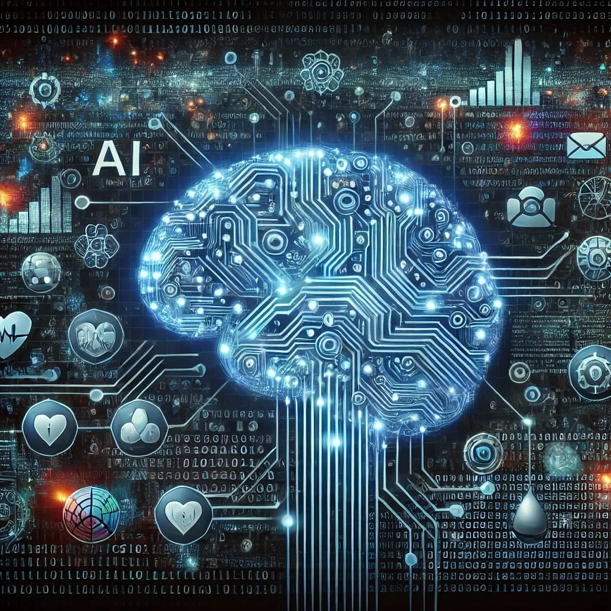

Ana Sayfa | Nedir? | Tarihçe | Kullanım Alanları | Çeşitleri | Avantaj & Riskler | Haberler | Gelecek | SSS | Hakkımızda
Yapay Zeka (Artificial Intelligence - AI), insan zekasına özgü olan öğrenme, problem çözme, karar verme ve mantık yürütme gibi yeteneklerin bilgisayar sistemleri tarafından taklit edilmesidir.

Yapay zeka sistemleri, büyük miktardaki verileri analiz ederek ve bu verilerdeki örüntüleri (desenleri) öğrenerek çalışır. Bilgisayarlar veri işledikçe kendi kendine öğrenme sürecini geliştirir.